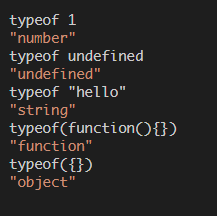
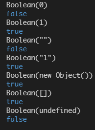
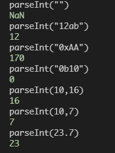
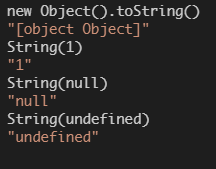

蛋疼的JavaScript(三)数据类型&运算符
typeof 探测类型
- type探测的类型是基本的数据类型，对于对象，他分不清是哪种object（除了function）,也就是说它深入不到构造方法级别的类型检测，这也是与instanceof的区别
- 
- 在控制台下有个好处可以很具体的看到返回的类型都是string的
类型转换
从常见的几种转换入手：
- 布尔类型的转换

- 数字类型的强制类型转换

注意其可以做数值的进制转换
- 转换为字符串

运算符
一元+
如果后面是字符串那么就变为数字
快捷转换为字符串
1 | var b = 1+""; |
逻辑运算符:布尔类型的强制转换
两个逻辑非可以将其他类型转换为布尔类型
1
2
3
4console.info(!!"")//false
console.info(!"")//true
console.info(![])//false
console.info(![1])//false完成代码的精，利用短路特性
1
2var a = 1;
true && (a=2);//加括号是运算符优先级的问题用于给一个默认值
1
2
3
4//默认5分
function score(s){
return s || 5;
}